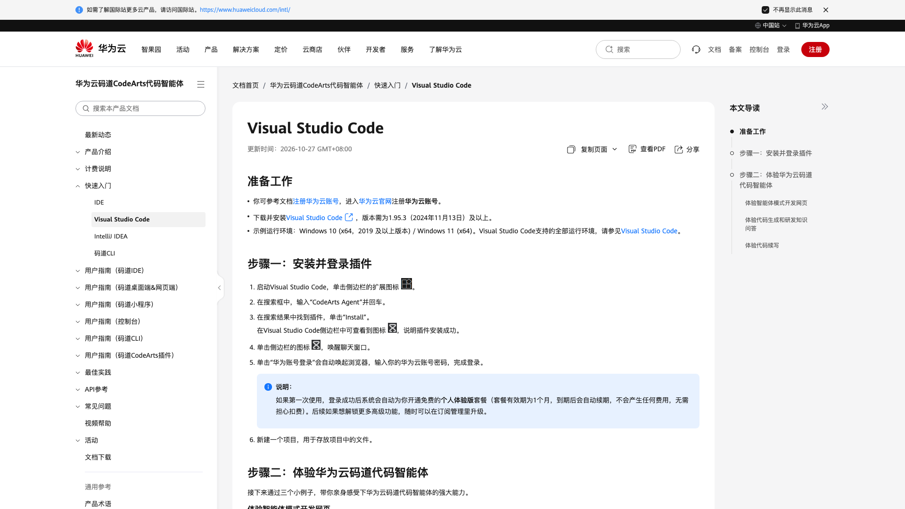

页级亲和探针 · CodeArts VS Code
Part1. 当前配置分析
当前人读页
https://support.huaweicloud.com/qs-codeartsagent/codeartsagent_qs_0002.html

问题判定
-
P1
截图没有文字说明。
图1–图4 的
alt为空，没有和题注绑在一起，Agent 读不到界面里的步骤。 - P1 做完步骤后没有验收。 文末没有「验证 / 预期结果」，成功标准散落在步骤叙述里。
- P1 章节不好定位。 标题从一级直接跳到四级，且没有稳定 id，没法用链接指到「体验代码续写」。
-
P1
代码没有标明语言。
提示词和 Java 示例都在
pre.screen里，没有语言标记。 - P2 提示块看不出类型。 说明框标题是空的，只靠图标区分。
- P2 正文和壳层没有分开。 顶栏、登录、评价和正文混在一起，没有清晰的正文区域。
Part2. 优化建议
建议稿以现网平行 Markdown 全文为底。绿色只标改过的地方：标题层级、图片说明、代码语言、说明前缀和验收。
建议模板（可部署的平行 Markdown）
https://support.huaweicloud.com/qs-codeartsagent/codeartsagent_qs_0002.md（建议稿）# Visual Studio Code
## 准备工作
- 你可参考文档[注册华为云账号](https://support.huaweicloud.com/usermanual-account/account_id_001.html)，进入[华为云官网](https://www.huaweicloud.com/)注册**华为云账号**。
- 下载并安装[Visual Studio Code](https://code.visualstudio.com/download)，版本需为1.95.3（2024年11月13日）及以上。
- 示例运行环境：Windows 10 (x64，2019 及以上版本) / Windows 11 (x64)。Visual Studio Code支持的全部运行环境，请参见[Visual Studio Code](https://support.huaweicloud.com/usermanual-plugin/codeartsagent_plugin_0002.html)。
## 步骤一：安装并登录插件
1. 启动Visual Studio Code，单击侧边栏的扩展图标 。
2. 在搜索框中，输入"CodeArts Agent"并回车。
3. 在搜索结果中找到插件，单击"Install"。
在Visual Studio Code侧边栏中可查看到图标 ，说明插件安装成功。
4. 单击侧边栏的图标 ，唤醒聊天窗口。
5. 单击"华为账号登录"会自动唤起浏览器，输入你的华为云账号密码，完成登录。
**说明：** 如果第一次使用，登录成功后系统会自动为你开通免费的**个人体验版**套餐（套餐有效期为1个月，到期后会自动续期，不会产生任何费用，无需担心扣费）。后续如果想解锁更多高级功能，随时可以在订阅管理里升级。
6. 新建一个项目，用于存放项目中的文件。
### 验证
1. 侧边栏能看到 CodeArts Agent 图标。
2. 能打开聊天窗口并完成登录。
## 步骤二：体验华为云码道代码智能体
接下来通过三个小例子，带你亲身感受下华为云码道代码智能体的强大能力。
### 体验智能体模式开发网页
你只需描述需求（例如开发简约风格前端登录页面），智能体即可自主规划逻辑、编写代码，为你生成可直接运行的程序。
1. 单击图标 ，打开聊天窗口，切换到"智能体"模式，切换到"氛围编程"模式。
2. 在聊天界面的输入框下方，选择"自动审批"，开启AI自动化。
3. 发送你的需求给AI。
```text
编写一个简约风格的前端登录页面
```
4. 页面创建完成后，左侧"资源管理器"中找到刚生成的login.html文件，右键选择"在文件资源管理器中显示"。双击并打开login.html文件，即可查看到登录页面。
### 验证
1. 能打开生成的 login.html，并看到登录页面。
### 体验代码生成和研发知识问答
1. 单击侧边栏图标 ，打开聊天窗口，切换到"智能问答"模式。
2. 发送你的需求给AI。
```text
请分析什么是二叉树，并写一段Python代码示例
```
3. 对话将返回二叉树的概念解释和Python代码示例，单击代码块右上角的插入 ，你可直接将代码添加到新文件。
图1 工具生成效果

4. 你可基于AI回复持续提问，进行多轮会话。例如，你可以继续给AI发送需求。
```text
把上面生成的Python代码改写为Java代码。
```
图2 生成的Java代码效果图

### 验证
1. 能把返回的代码插入新文件。
### 体验代码续写
你可根据上下文或注释，自动续写Java语言实现的Fib4数列第n个元素计算代码。
1. 创建Java类文件（例如"Solution.java"），在代码编辑器中输入如下代码内容。
```java
public class Solution {
/**
The Fib4 number sequence is a sequence similar to the Fibonacci sequence that's defined as follows:
fib4(0) -> 0
fib4(1) -> 0
fib4(2) -> 2
fib4(3) -> 0
fib4(n) -> fib4(n-1) + fib4(n-2) + fib4(n-3) + fib4(n-4).
Please write a function to efficiently compute the n-th element of the fib4 number sequence. Do not use recursion.
>>> fib4(5)
4
>>> fib4(6)
8
>>> fib4(7)
14
*/
public int fib4(int n) {
}
}
```
2. 在"public int fib4(int n) {"后按下快捷键"Alt+C"，AI会基于注释，在编辑器中生成对应代码。
为获得更精准、完整的多行代码生成效果，建议你完善代码的注释内容。
图3 代码续写效果

3. 如果认可当前代码建议，你可按下Tab键或者单击编辑区的"接受"完成采纳。
图4 接受续写代码

### 验证
1. 按下 Tab 或「接受」后，编辑器中出现完整的 fib4 实现。修改说明
- 绿色只标改过的字：标题层级、图片说明、代码语言、说明前缀、验收；其余按现网原文。
- 给截图补一句说明：图标和效果图不要空说明。对照 图片内容可转写。
- 每条体验路径末尾加验收：例如能看到侧边栏图标、能打开指定页面、能插入代码。
- 标题改成连续层级：现网用四级标题，建议改成二级 / 三级，方便顺着读。
- 给代码标明语言：Java 示例和提示词分开写。对照 代码块语义可读。
- 提示框加上可见文字前缀：如「说明：」，不要只靠图标。
- 已具备、继续保持：本页已声明平行 Markdown 和产品 llms，且都能打开。
待确认事项
- 待确认 文档壳（顶栏、登录、评价）能否在本页模板里收进独立区域，还是只能改正文。